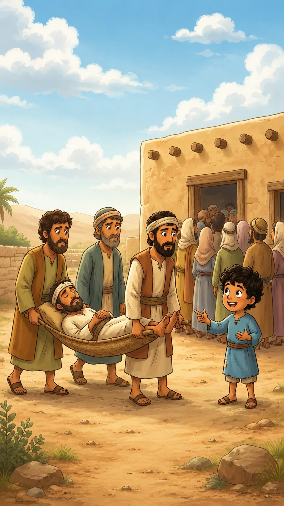
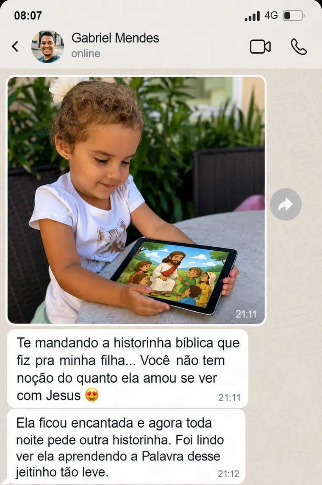

Parte 1
Joao chegou perto da casa e viu uma multidao ouvindo Jesus. Mesmo pequeno, ele sentiu que algo importante estava para acontecer.
Um aplicativo simples que coloca o nome do seu filho dentro das historias da Biblia e faz ele amar aprender sobre Deus.
Baseada em Marcos 2 e Lucas 5, com a crianca participando da cena de um jeito simples, respeitoso e encantador.
Joao chegou perto da casa e viu uma multidao ouvindo Jesus. Mesmo pequeno, ele sentiu que algo importante estava para acontecer.

Quatro amigos trouxeram um homem em uma maca. Joao percebeu que eles nao desistiriam de leva-lo ate Jesus.

Como a porta estava cheia, eles subiram pelo telhado. Joao aprendeu que a fe tambem encontra um caminho.

Quando a maca desceu, Jesus olhou com amor. Joao ouviu que o perdao e o cuidado de Deus chegam primeiro ao coracao.

Jesus mandou o homem levantar. Joao viu todos se alegrarem e entendeu que Jesus tem poder para restaurar.
Na volta, Jesus ensinou Joao: "Nunca desista de fazer o bem. A fe verdadeira caminha junto com o amor."



Aplicativo com historinhas ilimitadas
Historias biblicas com nome da crianca
Ilustracoes coloridas e licao no final
Devocionais e atividades para imprimir
ou R$ 29,90 a vista. Acesso imediato e vitalicio.
Garantia de 30 dias. Se nao gostar, pode pedir reembolso dentro do prazo.
Um livro fisico chega uma vez, a crianca le e ele vai para a estante. Aqui voce cria historias novas sempre que quiser, direto no celular.
Depois da compra, voce recebe o link de acesso pelo e-mail usado no checkout e ja pode entrar no aplicativo.
Sim. Voce escreve o que quer, coloca o nome da crianca e o aplicativo monta a historinha sozinho.